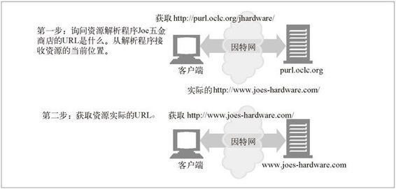

2.6 未来展望
URL 是一种强有力的工具。它可以用来命名所有现存对象，而且可以很方便地包含一些新格式。URL 还提供了一种可以在各种因特网协议间共享的统一命名机制。
但 URL 并不完美。它们表示的是实际的地址，而不是准确的名字。这就意味着 URL 会告诉你资源此时处于什么位置。它会为你提供特定端口上特定服务器的名字，告诉你在何处可以找到这个资源。这种方案的缺点在于如果资源被移走了， URL 也就不再有效了。那时，它就无法对对象进行定位了。
如果有了对象的准确名称，则不论其位于何处都可以找到这个对象，那该多完美啊。就像人一样，只要给定了资源的名称和其他一些情况，无论资源移到何处，你都能 够追踪到它。
为了应对这个问题，因特网工程任务组（Internet Engineering Task Force，IETF）已经对一种名为统一资源名（uniform resource name，URN）的新标准做了一段时间的研究了。无论对象搬移到什么地方（在一个 Web 服务器内或是在不同的 Web 服务器间），URN 都能为对象提供一个稳定的名称。
永久统一资源定位符（persistent uniform resource locators，PURL）是用 URL 来实现 URN 功能的一个例子。其基本思想是在搜索资源的过程中引入另一个中间层，通过一个中间资源定位符（resource locator）服务器对资源的实际 URL 进行登记和跟踪。客户端可以向定位符请求一个永久 URL，定位符可以以一个资源作为响应，将客户端重定向到资源当前实际的 URL 上去（参见图 2-6）。更多有关 PURL 的信息，请访问 http://purl.oclc.org。

图 2-6 PURL 通过资源定位符服务器来命名资源的当前位置
如果不是现在，那是什么时候
URN 背后的思想已经提出一段时间了。实际上，如果去看看某些相关规范的发布日期，你可能会问，为什么它们现在都还没有投入使用。
从 URL 转换成 URN 是一项巨大的工程。标准化工作的进程很缓慢，而且通常都有很充分的理由。支持 URN 需要进行很多改动——标准主体的一致性，对各种 HTTP 应用程序的修改等。做这种改动需要进行大量的工作，而且很不幸（或者可能很幸运）的是 URL 还有很大的能量，还要等待更合适的时机才能进行这种转换。
在 Web 爆炸性增长的过程中，因特网用户——包括从计算机科学家到普通因特网用户的每一个人——都已经学会使用 URL 了。在备受笨拙语法（对新手来说）和顽固问题困扰的同时，人们已经学会了如何使用 URL，以及如何对付它们的一些缺陷。 URL 有一些限制，但这并不是 Web 开发社区所面临的最紧迫的问题。
目前看来，在可预见的未来，因特网资源仍然会以 URL 来命名。它们无处不在，而且是 Web 的成功过程中一个非常重要的部分。其他命名方案想要取代 URL 还要一段时间。但是，URL 确实有其局限型，可能会出现新的标准（可能就是 URN），对这种标准进行部署会解决其中的某些问题。